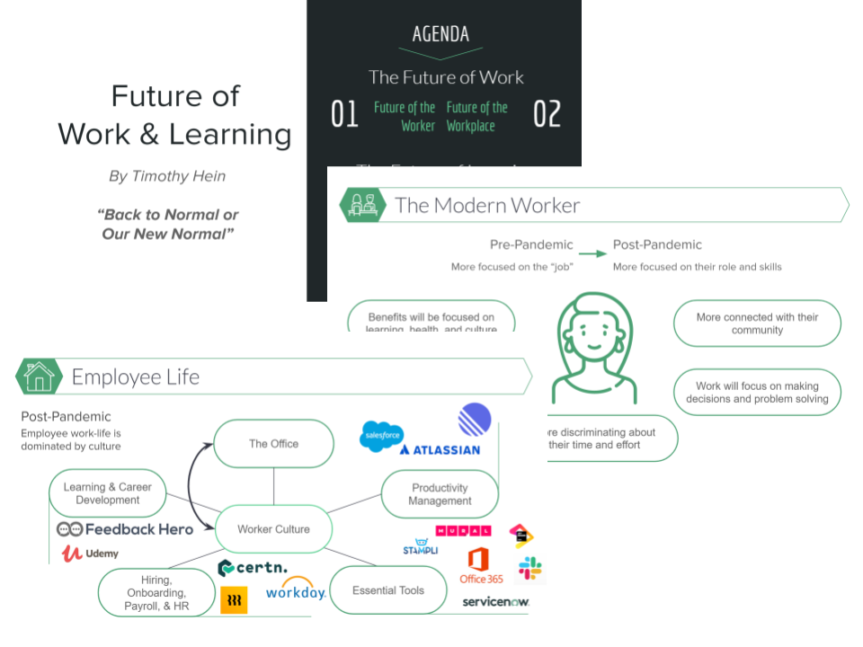
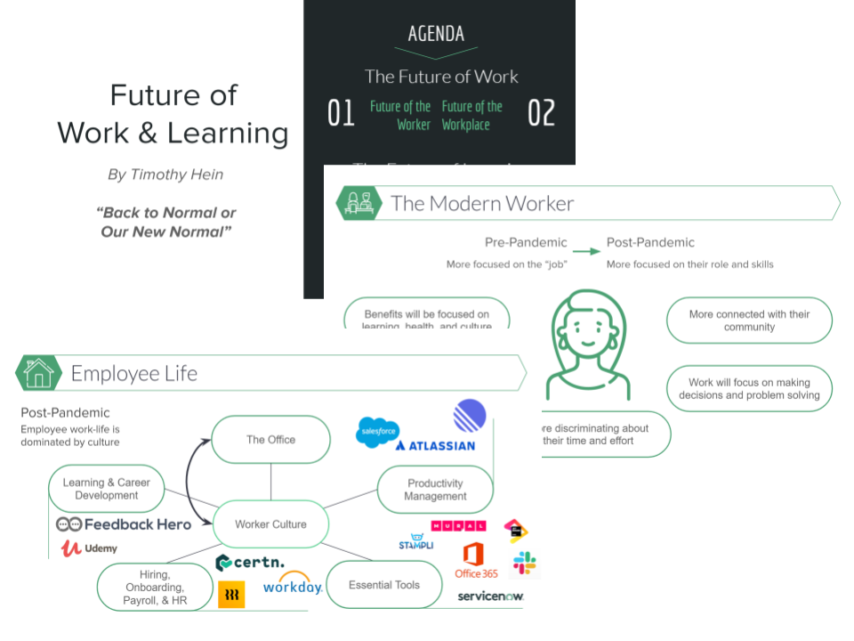
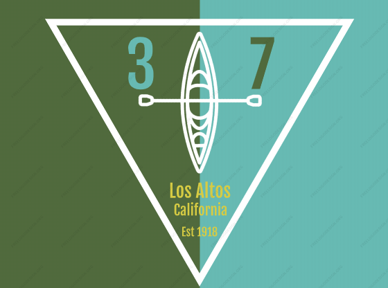
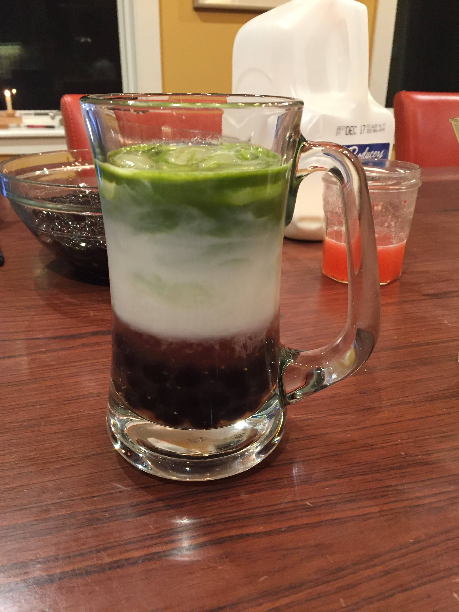
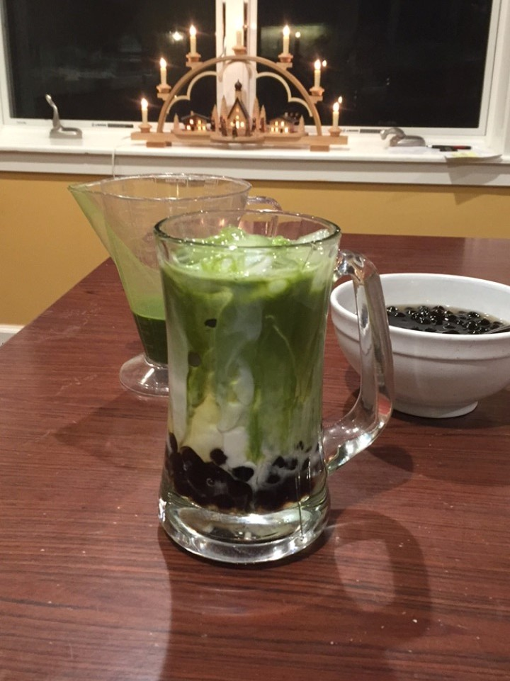
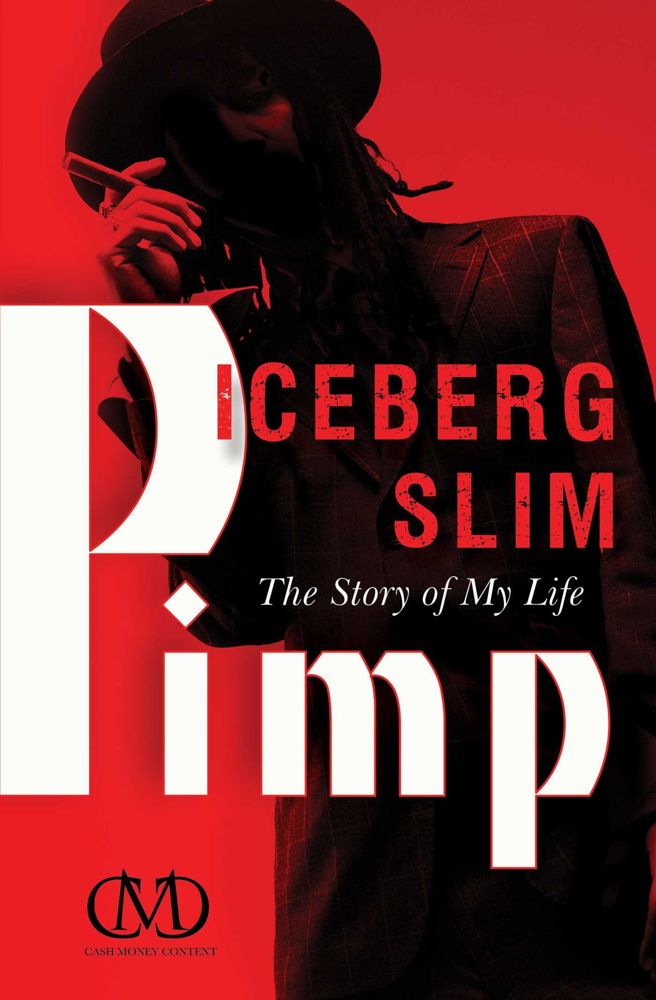
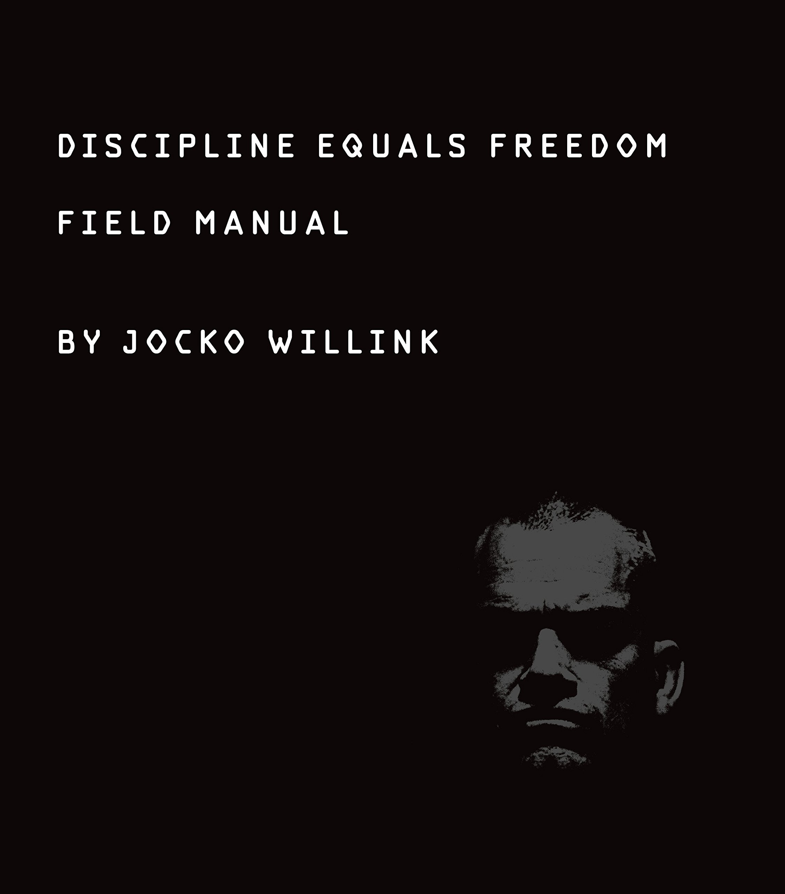
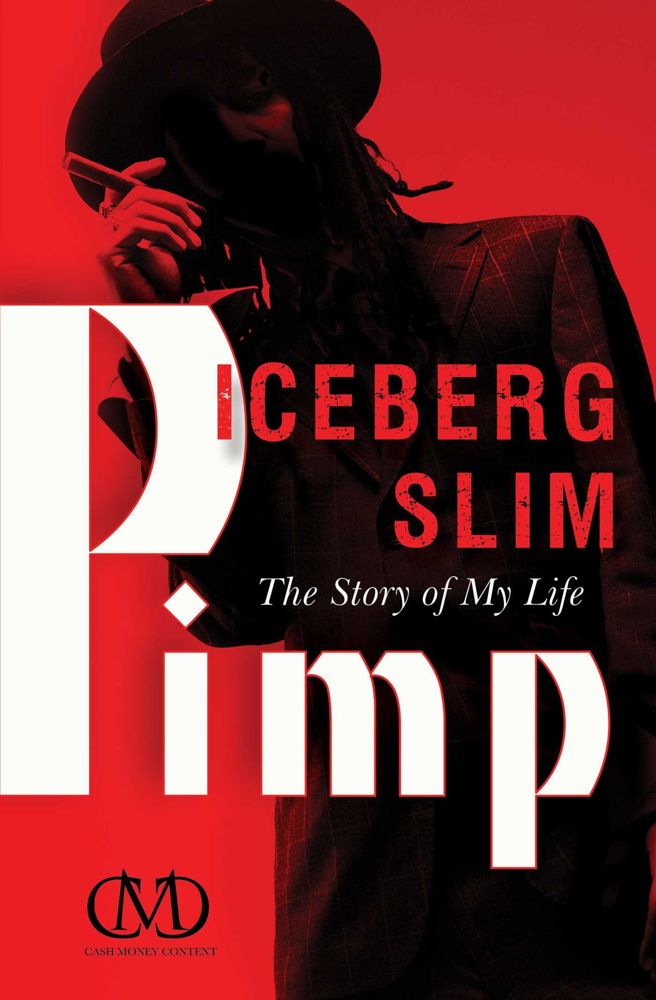
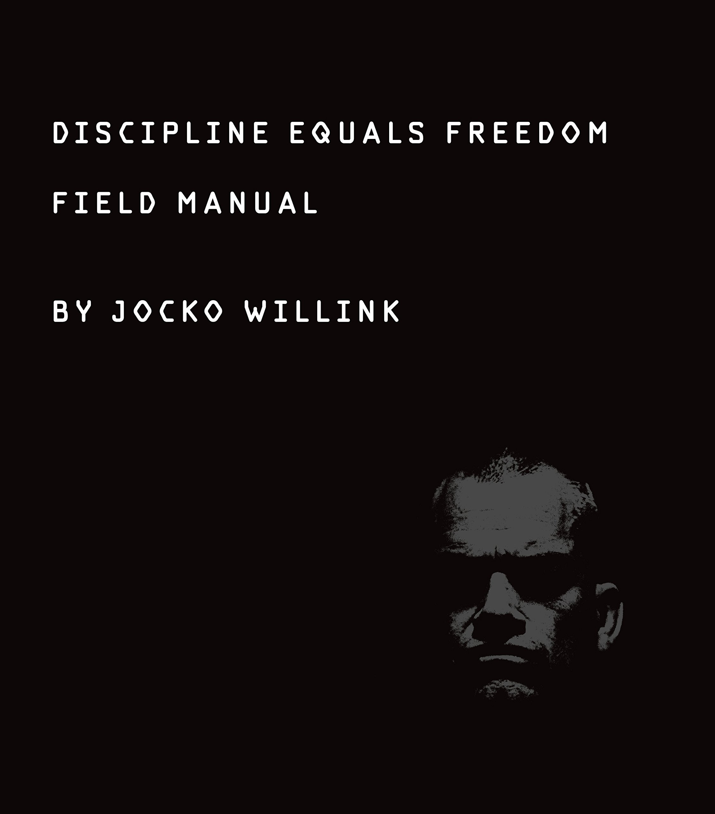

Howdy, my name is Timmy
I'm a maker, a barista, and a venture guy
if you want to see more, take a look below...
I beleive reputation comes from ones work...

 
At Roble I was resonsible for researching market changes that were resulting from social distancing.
From the research I created several potential frameworks for a "new-normal" post social distancing,
and how it would effect the market of human enablement.
Before I left, I led a roundtable of investors and stakeholders on the potential future in this market
in which we developed a investment thesis for the firm.
I was invited back for the holidays where I helped the GP identify and get contact info for potential investors.

At Roble I was resonsible for researching market changes that were resulting from social distancing.
From the research I created several potential frameworks for a "new-normal" post social distancing,
and how it would effect the market of human enablement.
Before I left, I led a roundtable of investors and stakeholders on the potential future in this market
in which we developed a investment thesis for the firm.
I was invited back for the holidays where I helped the GP identify and get contact info for potential investors.
BSA Scouts Eagle Project
Eagle Scout, Senior Patrol Leader, Order of the Arrow
 My eagle project had two components: leadership and community service. For the community service portion I did a simple project repairing tables at the local junior high school. For leadership, I was elected to be Senior Patrol Leader (the chief executive of my troop). As SPL I accomplished several goals: I rebuilt the patrol system, I centralized and migrated troop logistics in the cloud, and I created a mentoring system to help younger scouts learn how to lead. After earning my eagle I received the Herman Peters Award, which is given every few years when a scout demonstraties eceptional leadership.
I beleive reputation comes from ones work...
Tea & Coffee
I love cafe drinks!
  Anytime I have a meeting with someone new or I'm ideating with my team on new challenge I like to invite them out to a cafe for a drink and conversation. Once social distancing began I stepped up my game. Now I will experiment with different tea mixes, roast my own coffee beans, and attempt to replicate my favorite drinks from places like Boba Guys.
Litterature
 



With my morning tea or coffe I always enjoy reading. What started as a habit I picked up during quarentine to better myself is now a full hobby of mine. I try to read at least one book a month, switching themes each book. Reading allows me to walk in the shoes of someone else and try to learn from their experiences and perspective. The past couple books I really enjoyed are displayed to the right; I encourage you to read them if you have the chance.